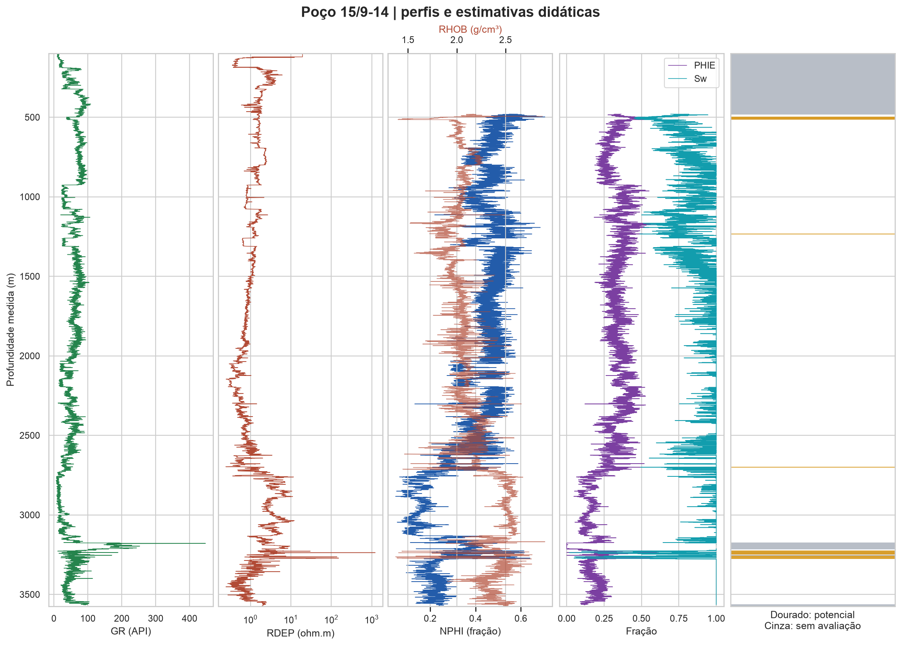
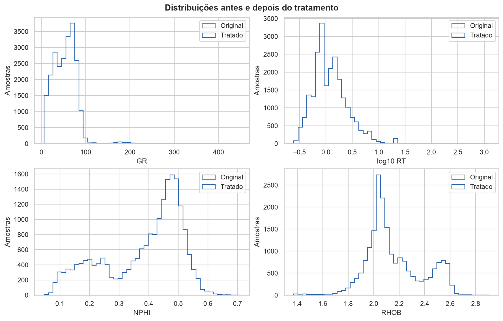
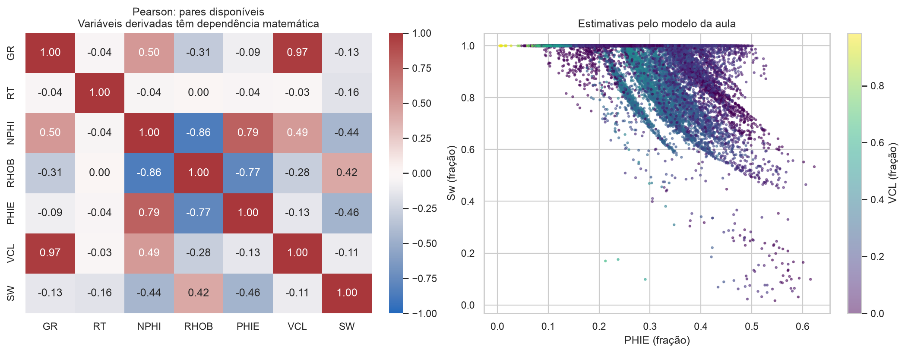
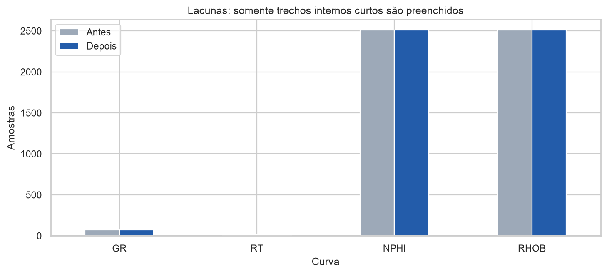

Arquivo: 15_9-14.las. Grupo: preencher integrantes e conferir exclusividade no Moodle. Entrega informada: 16/09/2026 às 14h.
Foram lidas 22,875 amostras, entre 98.804 e 3575.652 m de profundidade medida (MD). Após tratamento, 20,050 amostras permitem avaliar os critérios. A soma dos trechos que atendem aos cortes é 19.152 m MD, ou 0.63% da extensão avaliável de 3047.600 m MD. Foram encontrados 22 intervalos contíguos; 7 atingem 1.0 m MD. Essas espessuras são comprimentos ao longo do poço; não são espessuras verticais verdadeiras.
Fonte: https://doi.org/10.5281/zenodo.4351156. Documentação: https://github.com/bolgebrygg/Force-2020-Machine-Learning-competition. O registro descreve dados já parcialmente limpos e despiculados; nosso “original” é o LAS distribuído pelo FORCE, não o registro instrumental primário. Licenças informadas no registro: CC BY 4.0 e origem sob NOLD 2.0. SHA-256: 45128f4070ffa50c707f98383ce498922a1c26a77cf224f1384cdf973f397b3a. RDEP foi associado a RT. Unidades verificadas no cabeçalho: profundidade em m, GR em gAPI, RDEP em ohm.m, NPHI em m3/m3 e RHOB em g/cm3.
O valor NULL é convertido em ausente. A malha de profundidade é preservada. Limites físicos de triagem: GR >= 0; RT > 0; -0,15 <= NPHI <= 1; 1 <= RHOB <= 4. Esses limites são amplos e não substituem controle instrumental. O método IQR sinaliza extremos (log10 para RT), sem excluí-los automaticamente. Só são interpoladas lacunas internas cuja distância entre os pontos válidos vizinhos seja no máximo 0.5 m. Não se extrapolam as extremidades.
VCL = clip((GR - 30.0) / (150.0 - 30.0), 0, 1). PHIE = NPHI × (1 - VCL), seguindo a rotina do Colab; resultados fora de [0,1] ficam ausentes. Sw_bruta = [a × Rw / (PHIE^m × RT)]^(1/n), com a=1.0, m=2.0, n=2.0 e Rw=0.1 ohm.m. Sw é limitada a [0,1], mantendo Sw_bruta e uma indicação dos 11783 valores acima de 1. Porosidade zero ou negativa não recebe valor artificial para calcular Archie. SH = 1 - Sw; BVW = PHIE × Sw.
O exemplo alternativo do slide é exportado separadamente: PHID = (rho_matriz - RHOB)/(rho_matriz - rho_fluido); PHI_ND_EXEMPLO_SLIDE = (NPHI + PHID)/2. Ele não é usado para selecionar intervalos. Não se misturam as duas estimativas.
Cortes de seleção: PHIE > 0.12; Sw < 0.5; VCL < 0.4. São hipóteses didáticas, não valores calibrados para este poço. Todas as quatro curvas devem estar disponíveis para a avaliação. Cada amostra representa uma célula delimitada pelos pontos médios vizinhos, truncada no início/fim do registro. Saltos maiores que 1,5 vezes o passo mediano quebram intervalos e não recebem espessura. O denominador da fração potencial contém somente células avaliáveis. Intervalos menores que o mínimo continuam no total e são identificados na tabela.
Nesta execução, 74 das 126 amostras selecionadas estão classificadas como carvão (código 90000) no próprio FORCE. Portanto, os 19.152 m são somente o resultado bruto dos cortes didáticos, não uma estimativa validada de espessura produtora de petróleo. A comparação litológica está em `comparacao_litologica.csv`. Os intervalos que atingem a espessura mínima estão entre 3225.976 e 3274.312 m MD, em trechos separados, conforme a tabela. As porosidades estimadas elevadas nesses trechos devem motivar revisão de litologia e resposta instrumental.
Os trechos selecionados apresentam, segundo as hipóteses adotadas, menor resposta relativa de GR, porosidade estimada suficiente e resposta de resistividade compatível com Sw menor. Isso indica candidatos a investigação petrofísica; não comprova hidrocarbonetos nem produtividade. GR isolado não determina litologia: minerais radioativos e a composição da formação afetam o sinal. Os códigos litológicos fornecidos no LAS foram preservados como referência e não gerados por cortes de GR. PHIE baseada apenas em NPHI e GR é uma aproximação; matriz, argila e fluidos podem alterar as respostas. Archie é uma aproximação para rochas limpas; argila condutiva limita sua aplicação. Rw e parâmetros de Archie precisam de calibração, e a análise de sensibilidade mostra seu impacto. Correlações envolvendo PHIE, VCL e Sw refletem também as próprias fórmulas e não comprovam causalidade. Não há treinamento de aprendizado de máquina: esta atividade prepara e interpreta os dados.
Revisar os maiores intervalos na tabela junto a CALI, DRHO e demais curvas originais. Conferir litologia de referência, efeitos de argila/gás e condições de poço. Calibrar extremos de GR, Rw e parâmetros de Archie com informações independentes. Comparar intervalos com e sem amostras interpoladas antes de qualquer decisão operacional. Conferir disponibilidade do LAS entre grupos e preencher os integrantes antes da entrega.
- Dataset e licenças: https://doi.org/10.5281/zenodo.4351156 - Documentação FORCE: https://github.com/bolgebrygg/Force-2020-Machine-Learning-competition - Chave de códigos litológicos e confiança: https://thinkonward.com/app/c/challenges/force-well-logs - Eduardo Paiva, UDESC, Aula 3, slides e rotinas: https://colab.research.google.com/drive/1NhK84WwXNiG4HQSUbKZ0pUcT5ezVX7Xx - Dados sintéticos usados apenas como referência: https://colab.research.google.com/drive/1mm2gUmYbqO4MBcEgLr2LVAKkRSTvLGRZ - Equação de Archie e contexto: https://glossary.slb.com/en/terms/a/archie_equation
| curva | ausentes_antes | invalidos_fisicos | extremos_iqr_sinalizados | interpolados | ausentes_depois |
|---|---|---|---|---|---|
| GR | 73 | 0 | 252 | 0 | 73 |
| RT | 16 | 0 | 512 | 0 | 16 |
| NPHI | 2512 | 0 | 0 | 0 | 2512 |
| RHOB | 2512 | 0 | 176 | 0 | 2512 |
| topo_m | base_m | espessura_md_m | amostras | phie_media | sw_media | vcl_media | atinge_espessura_minima |
|---|---|---|---|---|---|---|---|
| 3225.9760 | 3228.7120 | 2.7360 | 18 | 0.5123 | 0.2697 | 0.0555 | True |
| 3271.8800 | 3274.3120 | 2.4320 | 16 | 0.5054 | 0.1635 | 0.1027 | True |
| 3269.1440 | 3271.4240 | 2.2800 | 15 | 0.5055 | 0.1414 | 0.0944 | True |
| 3236.3120 | 3238.2880 | 1.9760 | 13 | 0.5176 | 0.1557 | 0.0988 | True |
| 3262.1520 | 3263.9760 | 1.8240 | 12 | 0.4687 | 0.2337 | 0.0951 | True |
| 3241.1760 | 3242.6960 | 1.5200 | 10 | 0.4745 | 0.2736 | 0.0362 | True |
| 3258.5040 | 3259.5680 | 1.0640 | 7 | 0.3794 | 0.3587 | 0.1145 | True |
| rw_ohm_m | espessura_potencial_md_m | fracao_potencial_sobre_avaliavel |
|---|---|---|
| 0.0500 | 187.2640 | 0.0614 |
| 0.1000 | 19.1520 | 0.0063 |
| 0.2000 | 12.1600 | 0.0040 |



